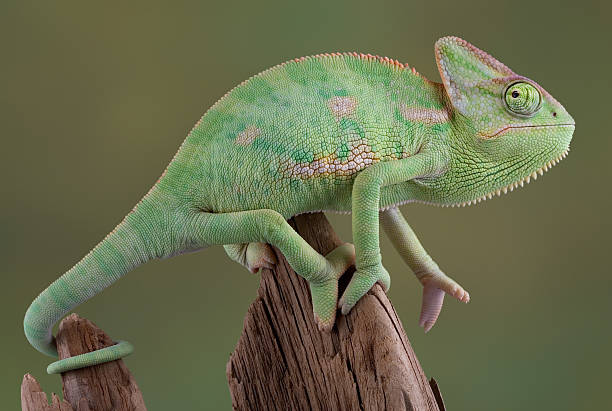

El Camaleón es un reptil conocido por su capacidad de cambiar de color para comunicarse o camuflarse..

• Puede cambiar de color según su entorno o estado. • Tiene ojos que se mueven de forma independiente. • Lengua muy larga y pegajosa para atrapar insectos. • Dedos adaptados para agarrarse a las ramas. • Vive principalmente en árboles.
El camaleón usa su lengua rápida para capturar insectos y puede mover cada ojo en direcciones diferentes.